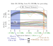
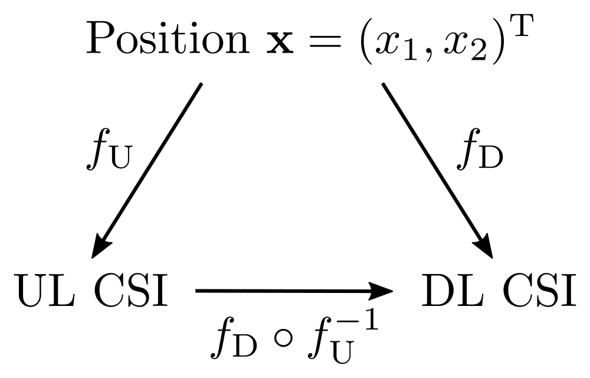
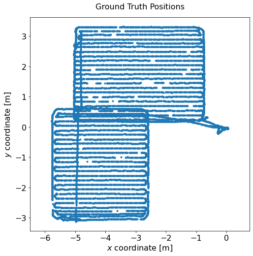
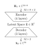
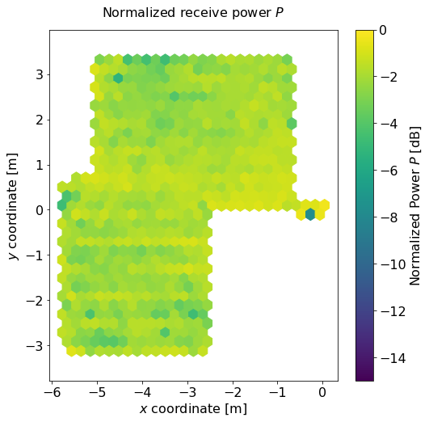
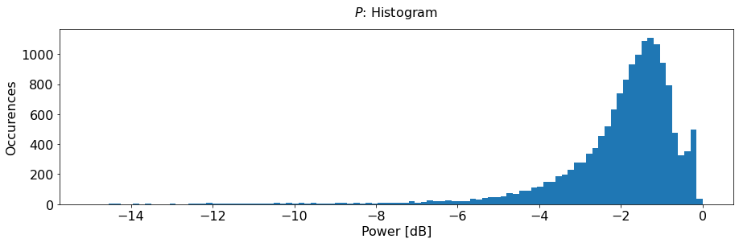
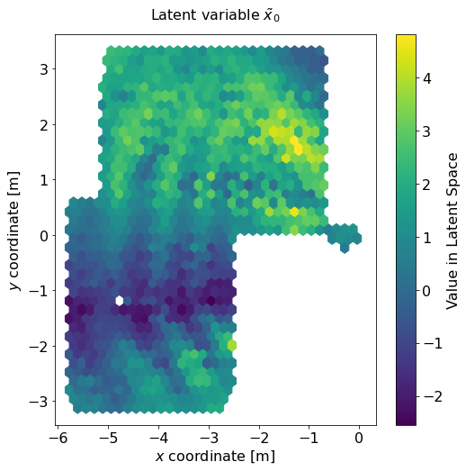
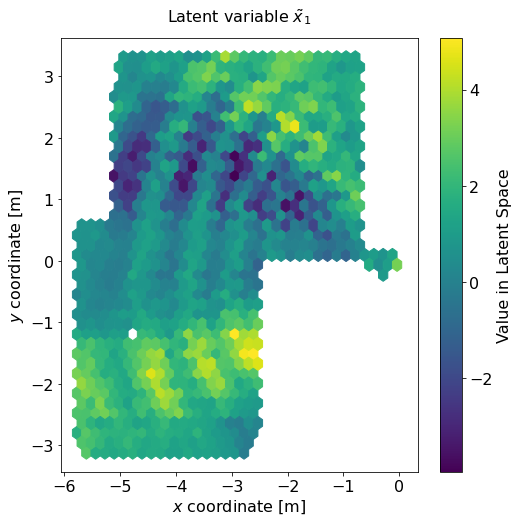

To focus different streams of downlink data on different user equipments (UEs), massive MIMO uses something called precoding. In the simplest "line of sight" case, precoding simplifies to beamforming: Different UEs, which are usually at different angles to the base station, each get a separate modulated electromagnetic wave in their direction. If there is not just a single "line of sight" path between base station and UEs, but several paths with one or multiple reflections, this simpliciation is no longer possible. In this case, massive MIMO precoding can be interpreted as the base station shooting multiple beams in multiple directions in such a way that the electromagnetic waves constructively interfere right at the point of the transmitter. But how does the base station know the direction, phase and time offsets for each of the individual beams? Sounds pretty challening!
The good news is that in time division duplex (TDD) massive MIMO, where uplink and downlink happen at the same frequency, precoding is fairly straightforward: Since wireless channels have a property that is known as reciprocity, the phase shift and time delay incurred by the propagated wave when passing through the channel is the same regardless of the direction in which it passes through the channel. It is therefore enough to estimate the channel using the received uplink signal (which may contain pilots) and to use the same estimates for the downlink channel.

Unfortunately, many real-world wireless systems are not TDD systems, but frequency division duplex (FDD) systems. This is not just a regulatory issue, but there are also some technical advantages to this mode of operation (e.g., lower latency and less transmit power fluctuations, which is beneficial for amplifier linearity). But then, how does the base station obtain a channel estimate to use for downlink precoding? This is the question we're trying to answer here!
The most obvious solution to this question is to simply estimate the downlink channel at each UE and to provide the channel estimates as feedback to the base station. This is a perfectly valid idea, but sending lots of downlink pilots and transmitting feedback lead to a pretty signifcant overhead, which can quickly grow too large for many antennas. Many researchers have thought about ways to somehow reduce the amount of feedback required using codebooks and other compression techniques, but that still does not remove the necessity for feedback entirely.

In this tutorial, the goal is to completely get rid of feedback by estimating the downlink channel state information (CSI) purely based on the uplink CSI. How is this possible? By collecting downlink CSI feedback from UEs and aggregating it with the observed uplink CSI measured at the same UE location, we can collect a large dataset of known correspondences between uplink and downlink CSI.
In an environment with static scatterer positions and fixed base station location, uplink and downlink CSI are entirely determined by the position \( \mathbf x = (x_0, x_1)^{\mathrm T} \) of the UE. If UL CSI is given by \( f_\mathrm{U}(\mathbf x) \), DL CSI is given by \( f_\mathrm{D}(\mathbf x) \) and \( f_\mathrm{U} \) and \( f_\mathrm{D} \) are bijective (which is often the case), then there exists a mapping \( f_\mathrm{D} \circ f_\mathrm{U}^{-1} \) from UL CSI to DL CSI. According to the universal approximation theorem, a neural network (NN) should be capable of learning this mapping. This means that when the BS measures a similar uplink channel to one that it has already seen previously, it can just assume that the downlink channel to this UE will also look similar to the previously seen one.
You might wonder how this topic can even be researched purely based on DICHASUS channel sounding datasets. After all, they only contain received (uplink) channel coefficients measured at the base station and no downlink CSI. It turns out that, thanks to channel reciprocity, this is actually not a problem: We know that the measured channel coefficients are the same regardless of the direction in which the channel is traversed. Therefore, as illustrated in the figure above, we can just pick a subcarrier range and designate it to be the uplink channel, pick a different range and call it the downlink channel and perform our NN training on that.
Do we really need a NN here, couldn't we just use classical signal processing? Well, we could try to determine the main direction that the uplink was coming from and simply send the downlink back to the same direction. However, working with angles of arrival and departure (AoA and AoD) is not as easy as it sounds if we potentially don't have absolute phase calibration. In contrast to classical AoA / AoD algorithms, NNs don't need absolute phase calibration. Moreover, with the classical method, we lose some performance since it would only be able to use one propagation path. As soon as we have more than one path, things get complicated (which phase difference to use between paths?) and very environment-dependent. Since, in practical systems, we don't have a good model for the radio environment, but lots of CSI data to work with, NNs are a natural fit for this kind of problem. So, let's get started!
For this tutorial, we use the dichasus-015x dataset.
Before we can do any training, we must first load the dataset.
Conveniently, DICHASUS datasets are provided in the TFRecords file format, which makes loading them with TensorFlow particularly simple.
First, we download three robot round trips dichasus-0152.tfrecords, dichasus-0153.tfrecords and dichasus-0154.tfrecords:
!mkdir dichasus
!wget --content-disposition https://darus.uni-stuttgart.de/api/access/datafile/:persistentId?persistentId=doi:10.18419/darus-2202/2 -P dichasus # dichasus-0152
!wget --content-disposition https://darus.uni-stuttgart.de/api/access/datafile/:persistentId?persistentId=doi:10.18419/darus-2202/3 -P dichasus # dichasus-0153
!wget --content-disposition https://darus.uni-stuttgart.de/api/access/datafile/:persistentId?persistentId=doi:10.18419/darus-2202/4 -P dichasus # dichasus-0154
Next, we load the data into TensorFlow, with dichasus-0152.tfrecords and dichasus-0153.tfrecords as training set and dichasus-0154.tfrecords as test set.
All of them contain data form \( M = 32 \) antennas.
dichasus-015x contains 1024 subcarrier channel coefficients per antenna and datapoint, which is quite a lot of data to work with.
To reduce the amount of processing power and memory required, we average over chunks of 32 neighboring subcarriers.
In addition, we cut out the virtual uplink and downlink channels from the 32 averaged subcarriers:
We call subcarriers \( 0 \) to \( 7 \) the "uplink channel" \( \mathbf H_\mathrm{U} \in \mathbb C^{32 \times 8} \) and subcarrier \( 27 \) the "downlink channel" \( \mathbf h_\mathrm{D} \in \mathbb C^{32} \).
The resulting frequency separation between uplink and downlink channels, measured from band edge to band edge, is approximately \( 29.7 \, \mathrm{MHz} \).
You might be surprised that the downlink channel consists of only a single subcarrier. Of course, any real-world system would use more than just one subcarrier for the downlink. However, it is sufficient to demonstrate successful channel estimation on a single subcarrier: If it works for one subcarrier, it is straightforward to generalize it to all subcarriers by, in the worst case, copy-pasting the same NN architecture for each of them (of course, in a real system, we would do something smarter than just using the same NN multiple times).
Here is the code for loading the data, averaging over subcarriers and extracting uplink and downlink channels:import tensorflow as tf
import numpy as np
import matplotlib.pyplot as plt
training_files = ["dichasus/dichasus-0152.tfrecords", "dichasus/dichasus-0153.tfrecords"]
test_files = ["dichasus/dichasus-0154.tfrecords"]
feature_description = {
"pos-tachy": tf.io.FixedLenFeature([], tf.string, default_value = ''),
"csi": tf.io.FixedLenFeature([], tf.string, default_value = ''),
}
def record_parse_function(proto):
record = tf.io.parse_single_example(proto, feature_description)
pos = tf.io.parse_tensor(record["pos-tachy"], out_type = tf.float64)
csi_tensor = tf.ensure_shape(tf.io.parse_tensor(record["csi"], out_type = tf.float32), (32, 1024, 2))
csi_tensor = tf.signal.fftshift(csi_tensor, axes = 1)
# Average neighboring subcarriers
chunksize = 32
featurecount = csi_tensor.shape[1] // chunksize
csi_averaged = tf.stack([tf.math.reduce_mean(csi_tensor[:, (chunksize * s):(chunksize * (s + 1)), :], axis = 1) for s in range(featurecount)], axis = 1)
csi_UL = csi_averaged[:, :8] / tf.norm(csi_tensor[:, :8])
csi_DL = csi_averaged[:, -5] / tf.norm(csi_tensor[:, -5])
return csi_UL, csi_DL, pos[:2]
training_set = tf.data.TFRecordDataset(training_files).map(record_parse_function).cache()
test_set = tf.data.TFRecordDataset(test_files).map(record_parse_function).cache()
training_set = training_set.shuffle(buffer_size = 100000)
test_set = test_set.shuffle(buffer_size = 100000)positions = []
for csi_ul, csi_dl, pos in test_set:
positions.append(pos)
positions = np.vstack(positions)
plt.figure(figsize = (8, 8))
plt.title("Ground Truth Positions", fontsize = 16, pad = 16)
plt.scatter(positions[:, 0], positions[:, 1], marker = ".")
plt.axis("equal")
plt.tick_params(axis = "both", which = "major", labelsize = 16)
plt.xlabel("$x$ coordinate [m]", fontsize = 16)
plt.ylabel("$y$ coordinate [m]", fontsize = 16)
plt.show()
Looking good so far!
def normalize_csi(channelvectors):
mean_power = tf.sqrt(tf.reduce_sum(tf.abs(channelvectors)**2, axis = -1))
return tf.math.divide(channelvectors, tf.cast(tf.expand_dims(mean_power, axis = -1), tf.complex64))
def loss_power(y_true, y_pred):
# Cast true channel / predicted channel vectors to complex-valued vectors
y_true = normalize_csi(tf.complex(y_true[..., 0], y_true[..., 1]))
y_pred = normalize_csi(tf.complex(y_pred[..., 0], y_pred[..., 1]))
power = tf.square(tf.abs(tf.reduce_sum(tf.math.multiply(y_true, tf.math.conj(y_pred)), axis = 1)))
# Since the loss-function is calculated over the whole batch, need to compute mean
return 1 - tf.reduce_mean(power)
With the loss function defined, we can now turn towards the neural network itself. There are many parameters to tweak when designing a neural network, including the number and type of layers (convolutional, dense, ...), the number of neurons in each layer, the activation function, the training schedule, the optimizer and many more. The purpose of this tutorial is not to tell you which approach is best; we will instead just focus on one possible architecture. If you want to learn more about the advantages and disadvantages of different neural network architectures, you can find a comparison in our paper entitled "Deep Learning for Uplink CSI-based Downlink Precoding in FDD massive MIMO Evaluated on Indoor Measurements".
This tutorial will show you how to build an autoencoder-like encoder / decoder structure for CSI estimation. The idea here is to first transform the uplink channel coefficients \( \mathbf H_\mathrm{U} \) into a sparse latent space representation \( \mathbf {\tilde x} \in \mathbb R^l \), from which the downlink channel coefficients \( \mathbf h_\mathrm{D} \) are then predicted. Basically, the encoder could learn something that resembles \( f_\mathrm{U}^{-1} \) whereas the decoder could learn something comparable to \( f_\mathrm{D} \). The advantage over a simple dense neural network might be that this architecture can prevent overfitting and thereby generalize better. We use dense layers with mostly ReLU activiation and enforce a latent space dimensionality of \( l = 2 \):
# Number of neurons in the penalty layer
latent_space_dimensionality = 2
encoder_input = tf.keras.layers.Input((32, 8, 2), name="Encoder_Input")
nn_output = tf.keras.layers.Flatten()(encoder_input)
nn_output = tf.keras.layers.Dense(units = 256, activation = "relu")(nn_output)
nn_output = tf.keras.layers.Dense(units = 128, activation = "relu")(nn_output)
nn_output = tf.keras.layers.Dense(units = 64, activation = "relu")(nn_output)
nn_output = tf.keras.layers.Dense(units = 32, activation = "relu")(nn_output)
encoder_output = tf.keras.layers.Dense(units = latent_space_dimensionality, activation = "linear", name = "Encoder_Output")(nn_output)
encoder = tf.keras.Model(inputs = [encoder_input], outputs = encoder_output, name = "encoder")
nn_output = tf.keras.layers.Dense(units = 16, activation = "relu")(nn_output)
nn_output = tf.keras.layers.Dense(units = 32, activation = "relu")(nn_output)
nn_output = tf.keras.layers.Dense(units = 64, activation = "relu")(nn_output)
nn_output = tf.keras.layers.Dense(units = 32 * 2, activation = "linear", name = "Decoder_Output")(nn_output)
decoder_output = tf.keras.layers.Reshape((32, 2))(nn_output)
model = tf.keras.Model(inputs = [encoder_input], outputs = decoder_output, name = "EncoderDecoder")
# Compile encoder / decoder model:
model.compile(optimizer=tf.keras.optimizers.Adam(), loss = loss_power)
def remove_pos(csi_ul, csi_dl, pos):
return (csi_ul, csi_dl)
# Use multiple training steps with increase batch size:
batch_sizes = [32, 64, 128, 256, 512, 1024]
for b in batch_sizes:
training_set_batched = training_set.batch(b)
test_set_batched = test_set.batch(b)
print("\nBatch Size:", b)
model.fit(training_set_batched.map(remove_pos), epochs = 10, validation_data = test_set_batched.map(remove_pos))
def power(y_true, y_pred):
y_true = normalize_csi(tf.complex(y_true[..., 0], y_true[..., 1]))
y_pred = normalize_csi(tf.complex(y_pred[..., 0], y_pred[..., 1]))
return tf.square(tf.abs(tf.reduce_sum(tf.math.multiply(y_true, tf.math.conj(y_pred)), axis = 1)))
powers = []
positions = []
for csi_UL, csi_DL, pos in test_set.batch(1000):
powers.append(power(csi_DL, model.predict(csi_UL)).numpy())
positions.append(pos.numpy())
powers = np.hstack(powers)
positions = np.vstack(positions)
plt.figure(figsize = (8, 8))
plt.title("Normalized receive power $P$", fontsize = 16, pad = 16)
plt.hexbin(x = positions[:, 0], y = positions[:, 1], vmin = -15, vmax = 0, C = 10 * np.log10(powers), gridsize = 28)
plt.axis("equal")
plt.tick_params(axis = "both", which = "major", labelsize = 16)
plt.xlabel("$x$ coordinate [m]", fontsize = 16)
plt.ylabel("$y$ coordinate [m]", fontsize = 16)
cb = plt.colorbar()
cb.set_label("Normalized Power $P$ [dB]", fontsize = 16)
cb.ax.tick_params(labelsize = 16)
plt.show()
plt.figure(figsize = (15, 4))
plt.title("$P$: Histogram", fontsize = 16, pad = 16)
plt.xlabel("Normalized Power [dB]", fontsize = 16)
plt.ylabel("Occurences", fontsize = 16)
plt.tick_params(axis = "both", labelsize = 16)
plt.hist(10 * np.log10(powers), range = (-15, 0), bins = 100)
plt.show()
By using an autoencoder-like architecture for the neural network, the encoder part of the architecture learns a way to map the high-dimensional CSI to a sparse latent space representation \( \tilde x \). Wouldn't it be interesting to see which latent space representation was learned by plotting it over physical space? That is, if we wanted to somehow compress CSI data to a very small number of variables (here: only two variables), what are the most important properties we need to take into account?
In a first step, we feed the uplink CSI vector \( \mathbf H_\mathrm{U} \) to our trained encoder network and collect the generated latent space representation. Afterwards, we generate a latent space variable plot for both \( \tilde x_0 \) and \( \tilde x_1 \).
latentspace = []
positions = []
for csi_UL, csi_DL, pos in test_set_batched:
latentspace.append(encoder.predict(csi_UL))
positions.append(pos)
latentspace = np.vstack(latentspace)
positions = np.vstack(positions)
for neuron in range(latent_space_dimensionality):
plt.figure(figsize = (8, 8))
plt.title(r"""Latent variable $\tilde x_""" + str(neuron) + "$", fontsize = 16, pad=16)
plt.hexbin(x = positions[:,0], y = positions[:,1], C = latentspace[:, neuron], gridsize = 35, bins=None)
plt.tick_params(axis = "both", labelsize = 16)
cb = plt.colorbar()
cb.set_label("Value in Latent Space", fontsize=16)
cb.ax.tick_params(labelsize = 16)
plt.xlabel("$x$ coordinate [m]", fontsize = 16)
plt.ylabel("$y$ coordinate [m]", fontsize = 16)
plt.show()

All our datasets are licensed under the CC-BY license, i.e., you are free to use them for whatever you like as long as you reference us in your publications. All code in this tutorial is CC0-licensed. This tutorial was written jointly by Niklas Süppel and Florian Euchner.